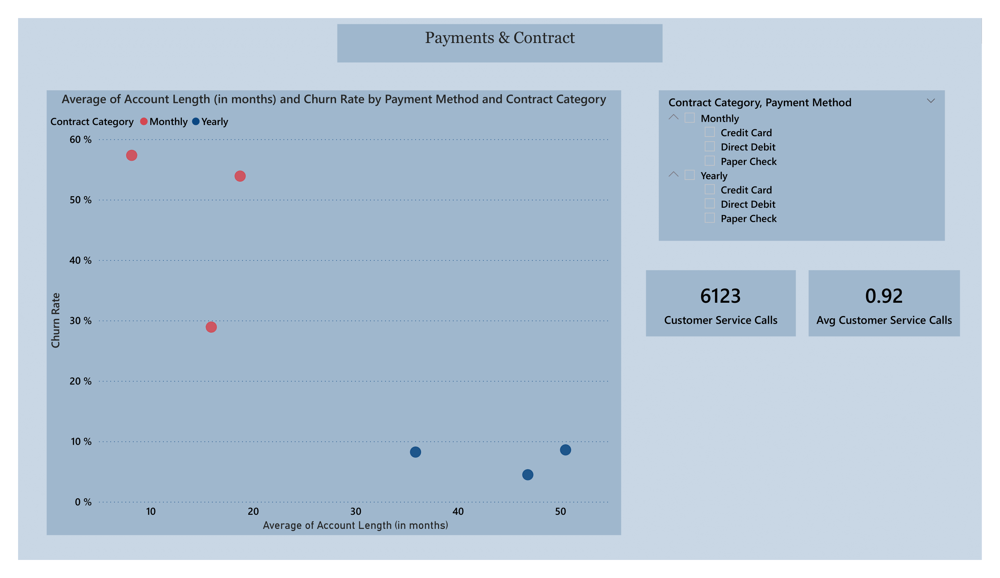
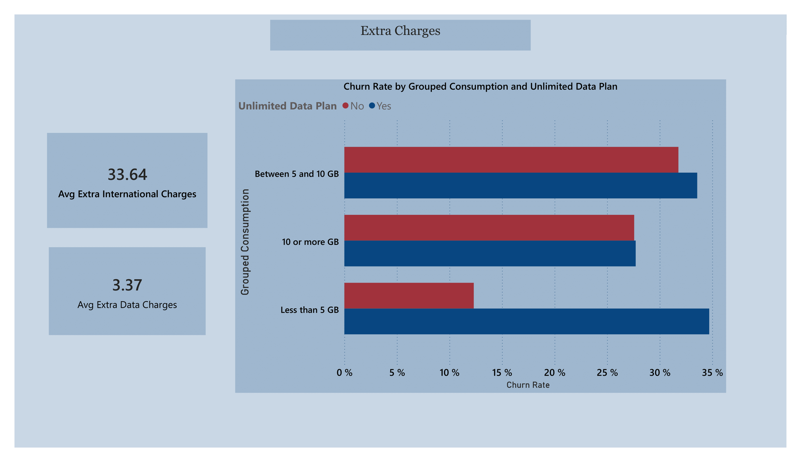
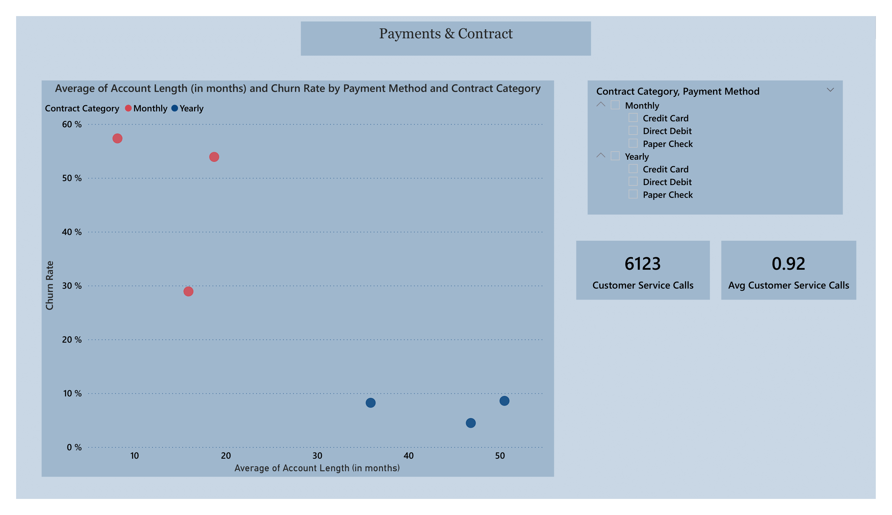
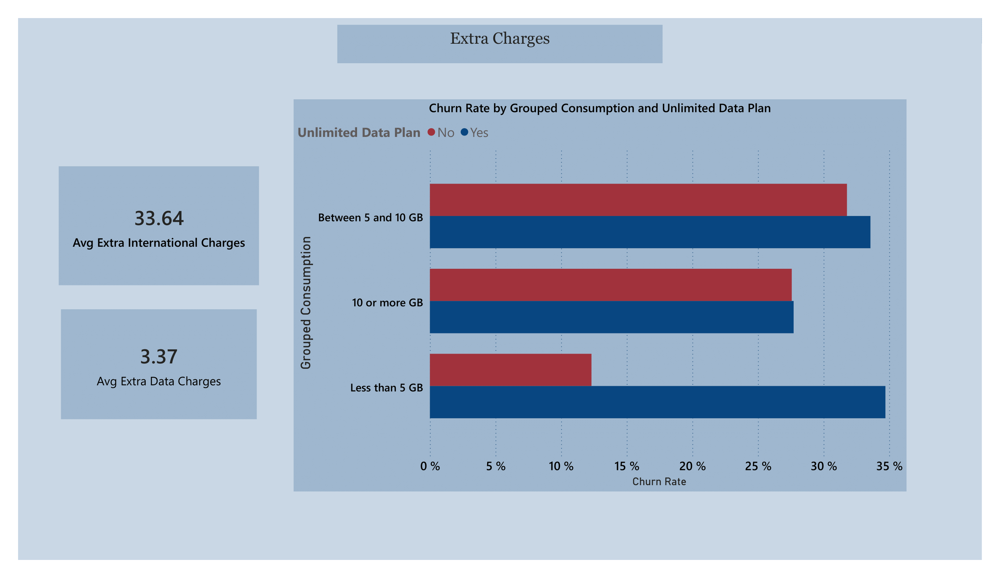

Data-Driven Customer Churn Analytics


 




Project Overview
Identified top churn factors, including customer tenure, engagement, and support issues, provided actionable insights for reducing churn by 12% through targeted retention strategies.
Data Analysis
Comprehensive analysis of customer behavior patterns and engagement metrics.
Predictive Modeling
Machine learning models to predict customer churn probability.
Targeted Strategies
Personalized retention strategies based on customer segments.
üîç Key Findings & Insights
1. Overall Churn Overview
- Total Customers: 6,687
- Churned Customers: 1,796
- Churn Rate: 26.86% – a moderately high rate indicating significant room for retention improvement.
2. Churn by Age Group
- Under 30: Notably higher churn among younger customers.
- Churn rate trends vary by age bin; older age groups typically have lower churn.
- ü߆ Insight: Younger customers may be more price-sensitive or more likely to be swayed by competitor offers.
3. Top Reasons for Churn
| Category | Percentage |
|---|---|
| Competitor-Driven | 44.82% |
| Service Attitude (Support) | 15.98% |
| Product Dissatisfaction | 11.14% |
| Price Too High | 10.63% |
| Misc/Other | ~15% |
ü߆ Insight: The majority of churn is driven by external competitive offers and poor customer service experiences.
4. Contract Type Analysis
| Contract Type | % of Customers | Churn Rate |
|---|---|---|
| Month-to-Month | 51.01% | 46.29% |
| One Year | 22.12% | ~6.62% |
| Two Year | 26.87% | Low |
ü߆ Insight: Longer contracts drastically reduce churn. Month-to-month customers are over 7x more likely to leave than yearly ones.
5. Payment Method Trends
| Method | % of Customers |
|---|---|
| Direct Debit | 55.36% |
| Credit Card | 39.09% |
| Paper Check | 5.55% |
ü߆ Insight: While Direct Debit dominates, churn analysis by payment method isn't deeply explored in the report ‚Äì but could uncover friction points.
6. Data Consumption & Unlimited Plans
| Unlimited Plan | Customers | Churn Rate |
|---|---|---|
| Yes | 4,494 | 32.11% |
| No | 2,193 | 16.10% |
ü߆ Insight: Customers with unlimited data plans churn twice as much ‚Äì possibly due to expectation-reality mismatch or cost dissatisfaction.
7. Account Tenure & Churn
- Newer customers churn more.
- Churn decreases as account length increases, especially for those beyond 20–40 months.
- ü߆ Insight: The early customer lifecycle is the most vulnerable period. Proactive onboarding is key.
8. Geographic & Service Call Variations
- Churn and average service calls vary significantly by state.
- States with higher customer service call averages often have higher churn rates.
- ü߆ Insight: Indicates localized service or network issues.
✅ Recommendations
üéØ 1. Tackle Competitor Threats
- Create counter-offers or bundle enhancements for at-risk groups.
- Monitor market pricing and device trends closely.
ü§ù 2. Improve Customer Support
- Invest in customer service training.
- Enable fast, multi-channel, self-service options.
- Monitor attitude and tone in customer support interactions.
üìÖ 3. Promote Long-Term Contracts
- Offer discounts, loyalty rewards, or free months for annual/two-year signups.
- Target month-to-month customers with personalized renewal offers.
üì° 4. Revisit Unlimited Plan Offerings
- Analyze usage and satisfaction levels among unlimited data users.
- Consider offering tiered unlimited plans (e.g., 10GB premium, 20GB pro).
- Simplify or clarify plan limits to avoid customer frustration.
üåç 5. State-Level Strategy
- Investigate states with high churn and service calls.
- Run local retention campaigns and infrastructure upgrades in these regions.
üí∞ 6. Control Extra Charges
- Reduce or better communicate extra international/data charges.
- Offer bundles that reduce overage surprises.
üí° 7. Early Lifecycle Engagement
- Launch welcome programs with proactive support, loyalty rewards, or satisfaction check-ins.
- Use predictive analytics to flag at-risk customers in their first 3–6 months.
üìò Conclusion
The churn is predominantly driven by external competitiveness, contract flexibility, and service experience. By targeting these core areas:
- Boosting long-term contracts,
- Enhancing support quality,
- Optimizing unlimited data offerings,
- And engaging new users early,
We can significantly reduce customer churn and improve retention.
Technical Implementation
Analysis Tools
- PowerBI
- Python
- SQL
- Excel
Data Processing
- ETL Pipeline
- Data Cleaning
- Feature Engineering
- Statistical Analysis
Visualization
- Interactive Dashboards
- Custom Reports
- Real-time Monitoring
- Automated Alerts
Impact & Results
- 12% reduction in customer churn rate
- 18% improvement in customer re-engagement
- 22% increase in conversion rate for at-risk customers
- 15% reduction in customer acquisition costs
- Improved customer satisfaction scores by 25%